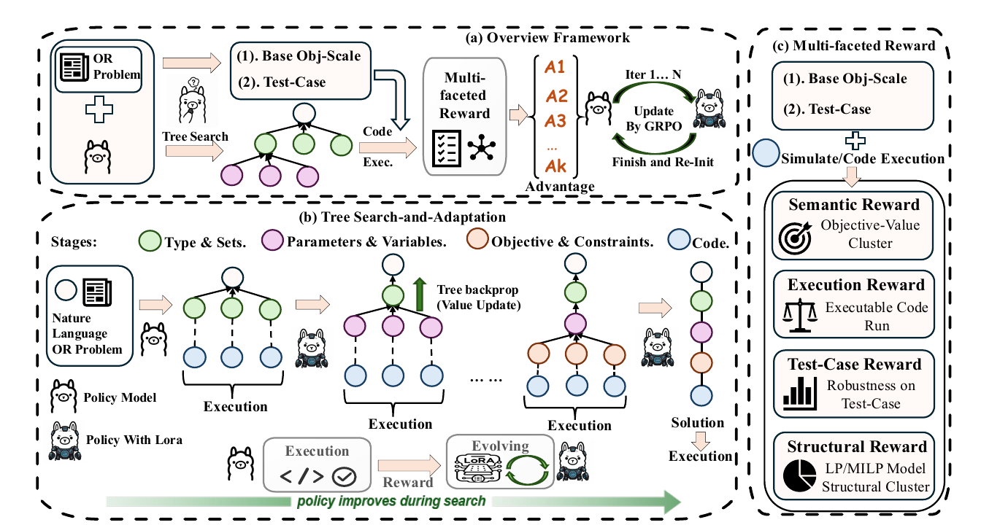

StarOR: Synergizing Tree Search and Test-Time Reinforcement Learning for Optimization Modeling
StarOR couples hierarchical Monte Carlo tree search with test-time reinforcement learning, turning execution feedback from the current problem into instance-specific policy updates for more reliable optimization modeling.

StarOR closes the loop between four-stage tree search, executable reward evaluation, and GRPO updates to an instance-specific LoRA adapter.
01 / Research question
Optimization modeling is a sequence of dependent symbolic decisions: problem type, sets, parameters, variables, objective, constraints, and executable code. A mistake made early in this hierarchy propagates to every later stage. Search-based methods can explore alternative formulations, but their generator remains fixed, so the same modeling bias may recur across branches. The paper asks whether evidence collected during search can immediately improve the policy used for the rest of the same problem, without requiring ground-truth formulations at test time.
02 / Approach
StarOR represents formulation as a four-stage trajectory: problem type and sets, parameters and variables, objective and constraints, and final code. Monte Carlo tree search expands sibling candidates at each non-terminal node. Each partial candidate is completed into executable code and evaluated with an unsupervised, multi-faceted reward combining executability, objective-value consensus, structural consistency, and robustness on synthetic test cases. Siblings form a local comparison group for Group Relative Policy Optimization (GRPO), which updates a transient LoRA adapter dedicated to the current instance. The adapter is then used by later tree expansions and reset before the next problem. Group clustering and backpropagation reduce redundant exploration, while dynamic reward shaping shifts emphasis from feasibility early in search to consensus and structural quality later on.
03 / Research scope
Experiments cover 1,356 problems from NL4OPT, MAMO-Easy, MAMO-Complex, IndustryOR, and OptMATH. The principal test-time comparison uses Qwen3-4B-Instruct-2507, an expansion group size of eight, and at most ten search iterations. Accuracy is determined by whether the generated executable model reproduces the reference objective value within a numerical tolerance. Additional studies isolate LoRA adaptation, reward design, test-time scaling, repair budgets, and runtime allocation across easy and complex benchmarks.
Experimental results
Same-backbone test-time performance
| Method | NL4OPT | MAMO Easy | MAMO Complex | IndustryOR | OptMATH | Macro Avg. |
|---|---|---|---|---|---|---|
| GPT-4 | 89.0 | 87.3 | 49.3 | 33.0 | 16.6 | 55.0 |
| DeepSeek-V3.1 | 84.8 | 88.9 | 63.5 | 44.0 | 43.9 | 65.0 |
| DeepSeek-R1 | 82.4 | 87.2 | 67.9 | 45.0 | 40.4 | 64.6 |
| OpenAI-o3 | 69.4 | 77.1 | 51.2 | 44.0 | 44.0 | 57.1 |
| ORLM-LLaMA3-8B | 85.7 | 82.3 | 37.4 | 24.0 | 2.6 | 46.4 |
| LLMOPT-Qwen2.5-14B | 80.3 | 89.5 | 44.1 | 29.0 | 12.5 | 51.1 |
| OptMATH-Qwen2.5-7B | 94.7 | 86.5 | 51.2 | 20.0 | 24.4 | 55.4 |
| SIRL-Qwen2.5-7B | 96.3 | 91.7 | 51.7 | 33.0 | 30.5 | 60.6 |
| Zero-shot | 55.9 | 81.9 | 11.8 | 27.0 | 10.8 | 37.5 |
| Best-of-N (N=16) | 70.6 | 88.9 | 22.2 | 39.0 | 21.7 | 48.5 |
| Reflexion | 58.0 | 82.7 | 16.3 | 28.0 | 11.4 | 39.3 |
| AutoFormulator | 75.5 | 85.7 | 23.2 | 30.0 | 11.4 | 45.2 |
| OptiTree | 86.5 | 90.0 | 32.0 | 33.0 | 12.7 | 50.8 |
| OR-R1-Qwen3-8B | 88.3 | 86.1 | 49.9 | 35.3 | — | — |
| StarOR | 92.7 | 94.4 | 54.2 | 51.0 | 32.5 | 65.0 |
All displayed test-time methods use the same 4B backbone. The Best-of-N OptMATH entry is the single-run value reported in the main comparison table.
StarOR leads the evaluated same-backbone test-time methods on every benchmark and raises the macro average from 50.8% for the strongest displayed search baseline to 65.0%. The largest gains appear on structurally harder sets, supporting the idea that adapting the proposal policy during search helps when repeated static sampling would otherwise reproduce the same mistakes.
Search and online adaptation
| Method | NL4OPT | MAMO Easy | MAMO Complex | IndustryOR | OptMATH | Macro Avg. |
|---|---|---|---|---|---|---|
| Zero-shot | 55.9 | 81.9 | 11.8 | 27.0 | 10.8 | 37.5 |
| AutoFormulator (MCTS) | 75.5 | 85.7 | 23.2 | 30.0 | 11.4 | 45.2 |
| StarOR without LoRA | 89.4 | 90.0 | 49.3 | 47.0 | 28.3 | 60.8 |
| StarOR with LoRA | 92.7 | 94.4 | 54.2 | 51.0 | 32.5 | 65.0 |
Structured search accounts for much of the improvement over zero-shot generation, while the transient adapter adds a further 4.2 macro-average points over the same StarOR search without LoRA. The consistent per-benchmark gains show that search feedback is useful not only for choosing among existing candidates, but also for changing the distribution of candidates generated later in the trajectory.
Computational cost
StarOR deliberately spends additional test-time computation on reliable formulation. With K=8, OptMATH averages 205.2 seconds and about 7.1 search/adaptation iterations per instance; the paper attributes most sequential cost to batched rollout generation and GRPO rather than solver execution. Scaling K from 2 to 32 raises OptMATH accuracy from 23.5% to 37.3% while increasing average time from 56.1 to 1,396.1 seconds. At a closer budget, K=4 reaches 25.9% in 93.9 seconds, compared with 24.9% in 104.2 seconds for Best-of-32.
Citation
@misc{staror2026,
title = {StarOR: Synergizing Tree Search and Test-Time Reinforcement Learning for Optimization Modeling},
author = {Jiajun Li and Yu Ding and Shisi Guan and Ran Hou and Wanyuan Wang},
year = {2026},
eprint = {2606.15197},
archivePrefix = {arXiv},
primaryClass = {cs.LG},
url = {https://arxiv.org/abs/2606.15197}
}